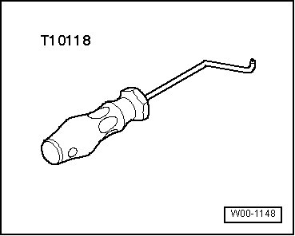
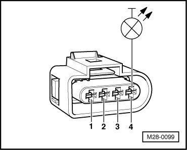
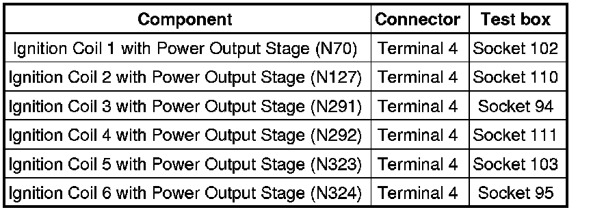

Ignition Coil: Testing and Inspection
Diagnostic Procedures
Ignition Coils with Power Output Stages, Checking
• Ignition coils and power output stages are one component and cannot be replaced individually.
Special tools, testers and auxiliary items required
• Assembly tool (T10118)

• Multimeter (VAG1526) or Multimeter (VAG1715)
• Voltage test lamp (VAG1527)
• Connector test kit (VAG1594)
• Wiring diagram
Test requirements
• Respective fuses of ignition coils and power output stages in E-box (in plenum chamber, left side) must be OK:

• Motronic Engine Control Module (ECM) Power Supply Relay (J271) must be OK, check:
• Battery voltage must be at least 11.5 volts.
• All electrical consumers such as, lights and rear window defroster must be switched off.
• Parking brake must be engaged or else daylight driving lights will be switched on.
• For vehicles with automatic transmission, selector lever must be in P.
• If vehicle is equipped with an A/C system, it must be switched off.
• Ground (GND) connections between engine and chassis must be OK.
• Engine speed (RPM) sensor must be OK, checking --> [ Engine Speed Sensor, Checking ] Engine Speed Sensor, Checking.
• Camshaft Position (CMP) sensors must be OK, checking --> [ Camshaft Position Sensor, Checking ] Camshaft Position Sensor, Checking.
• Ignition switched off.
Test sequence
- Disconnect connector from ignition coils 1 to 6.

Assembly tool (T10118) is recommended to release connector catches.
- To do so, attach assembly tool (T10118) on locking button (arrow) and then carefully pull down connector.
• Before disconnecting harness connectors, mark allocation to component.
Checking voltage supply
- Use multimeter and adapter cables to measure voltage supply between terminals 1 + 3 and 2 + 3 of the corresponding connector for ignition coil.

- Switch ignition on.
Specified value: at least 11.5 V
- Switch ignition off.
If there is no voltage:
- Check voltage supply at 4-pin connector terminal 3 to Motronic Engine Control Module (ECM) Power Supply Relay (J271) according to wiring diagram:
- Check wires between 4-pin connector and Ground (GND) for open circuit according to wiring diagram.
Terminal 1 and Ground (GND)
Terminal 2 and Ground (GND)
Wire resistance: max. 1.5 ohms
- Erase DTC memory of Engine Control Module (ECM) , Diagnostic mode 4: Reset/erase diagnostic data.
- Generate readiness code.
If there is no malfunction in voltage supply:
- Check activation.
Checking activation
- Remove fuses - 13 - and - 14 - for activation of Fuel Pump (FP) Relay (J17)- and Fuel Pump (FP) 2 Relay (J49) from fuse holder.

• Fuses nos. - 13 - and - 14 - are located in fuse holder of E-box, in plenum chamber, left.
- Using adapter cables, connect voltage test lamp to

Terminal 4 + engine Ground (GND) of disconnected connector for cylinder 1.
- Operate starter and test ignition signal from Engine Control Module (ECM).
LED should flicker.
- Repeat test at connectors for fuel injectors 2 through 6.
- Switch ignition off.
- Insert fuses - 13 - and - 14 - in the fuse holder.
If LED flickers and voltage supply is OK:
- Replace the respective ignition coil with power output stage.
- Erase DTC memory of Engine Control Module (ECM) , Diagnostic mode 4: Reset/erase diagnostic data.
- Generate readiness code.
If LED does not flicker:
- Check wires to Engine Control Module (ECM) according to wiring diagram.
Checking wiring
- Connect test box to control module wiring harness , connect test box for wiring test.
- Check wires between test box and 4-pin connector for open circuit according to wiring diagram.
Wire resistance: max. 1.5 ohms

- Also check wires for short circuit to each other.
Specified value: infinite ohms
- Erase DTC memory of Engine Control Module (ECM) , Diagnostic mode 4: Reset/erase diagnostic data.
- Generate readiness code.
If there is no malfunction in wire connections:
- Replace Motronic Engine Control Module (ECM) (J220).
Final Procedures
After the repair work, the following work steps must be performed in the following sequence:
1. Check the DTC memory. Refer to --> [ Diagnostic Mode 03 - Read DTC Memory ] Diagnostic Modes 01 - 09.
2. If necessary, erase the DTC memory. Refer to --> [ Diagnostic Mode 04 - Erase DTC Memory ] Diagnostic Modes 01 - 09.
3. If the DTC memory was erased, generate readiness code. Refer to --> [ Readiness Code ] Monitors, Trips, Drive Cycles and Readiness Codes.